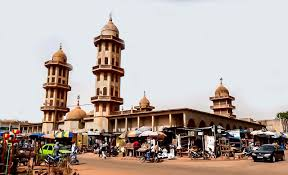

Description
La Grande Mosquée de Ouagadougou est un édifice religieux emblématique situé au cœur de la ville. Construite en 1893 par le roi Mossi Naaba Koom, elle est le principal lieu de culte de la communauté musulmane de Ouagadougou. L’architecture de la mosquée est un mélange de styles mauresque et soudano-sahélien, avec des maçonneries complexes et des volets en bois. Elle se trouve dans la zone commerciale, non loin du grand marché de la ville.
